リール投稿マスター
バズるリールの構成とアルゴリズム攻略 — Jun 2026
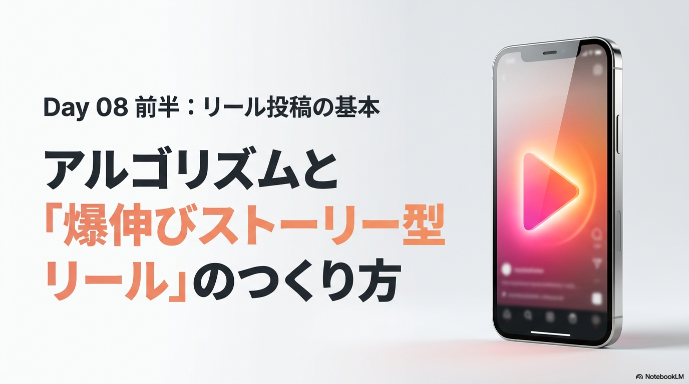
バズるリール動画の構成法・アルゴリズムの評価指標・制作の勝ちパターンを習得し、1本目から伸びるリールを企画・制作できるようになる。
ストーリー型（共感型）リールの仕組みを理解し、視聴維持率を高める動画構成が組み立てられるようになる
アルゴリズムが評価する4指標（視聴維持率・過去のインタラクション・保存率・DMシェア数）の仕組みを把握する
Canvaのテンプレートを使い、AIで台本を作成してから約10分でリールを仕上げる高速ワークフローを習得する
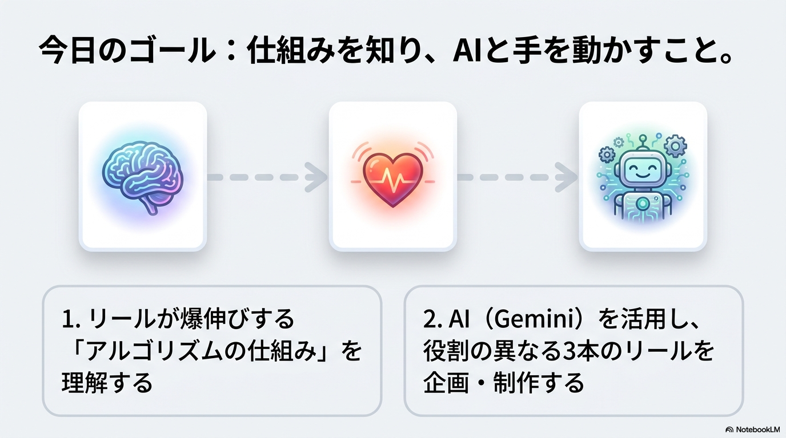
一方的にお役立ち情報を語るだけの動画は競合が多く埋もれがちです。視聴者の「悩み」に共感し、ストーリーで惹きつける手法が2026年最新リールのトレンドとなっています。
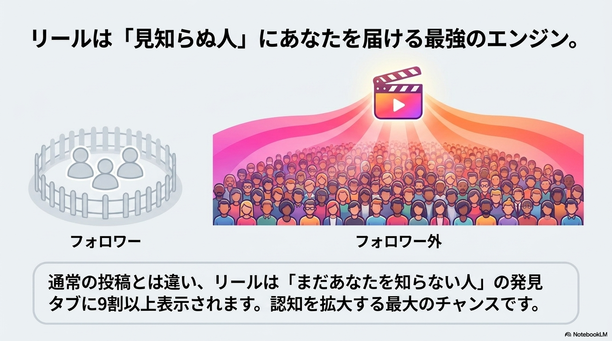
ストーリー型は、視聴維持率を高めるための最も効果的な設計であり、結果としておすすめ掲載（発見タブ）への近道となります。
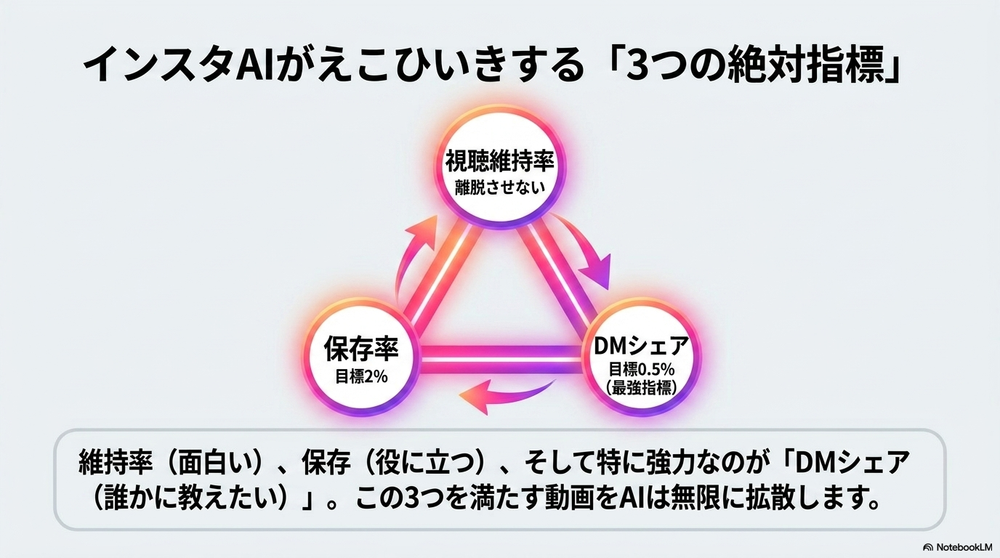
次のセクションでは、ストーリー型リールを構成する具体的な「3つの要素」について解説します。
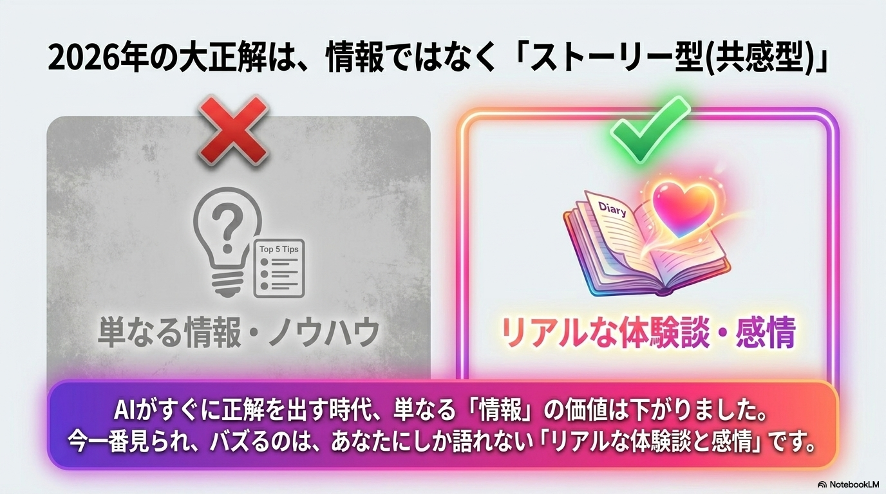
冒頭のフック：視聴者の抱える「悩み」や「理想」を言語化してスクロールを止める。最初の3秒で「これは自分向けの動画だ」と瞬時に思わせることが最重要。
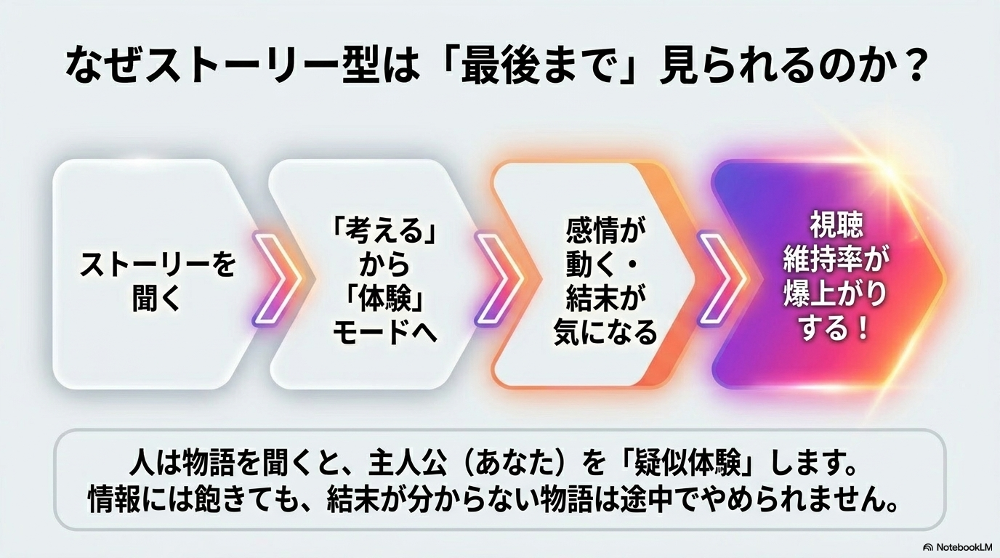
ストーリー設計：「課題・挫折」→「転機・出会い」→「行動・解決策」→「現在の結果」へと物語をテンポよく展開する。
視聴維持率 50% 超えを目標に、最後までユーザーを飽きさせない台本設計を行う。
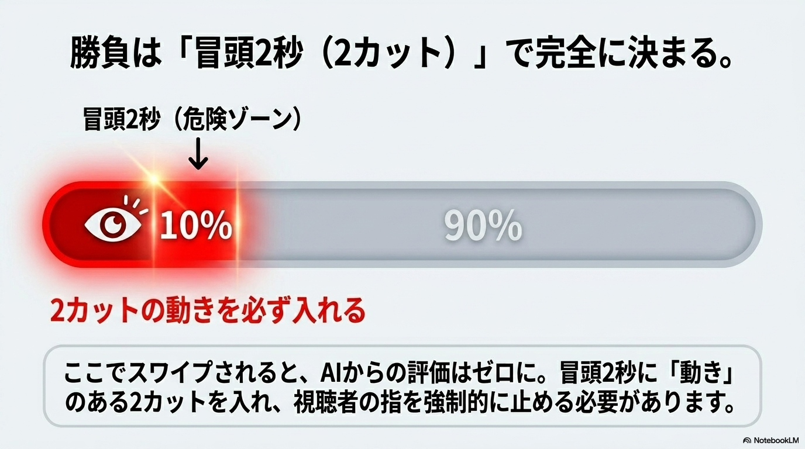
CTA（Call to Action）：動画の最後で「続きはプロフィールへ」「忘れないように保存してね」など、ユーザーにしてほしい次のアクションを明確に指示する。
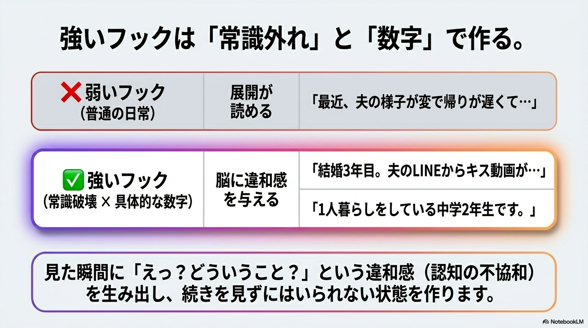
これら「フック → 本編ストーリー → CTA」の3つの要素を一貫した流れで配置することで、離脱されない強力なリール動画が完成します。
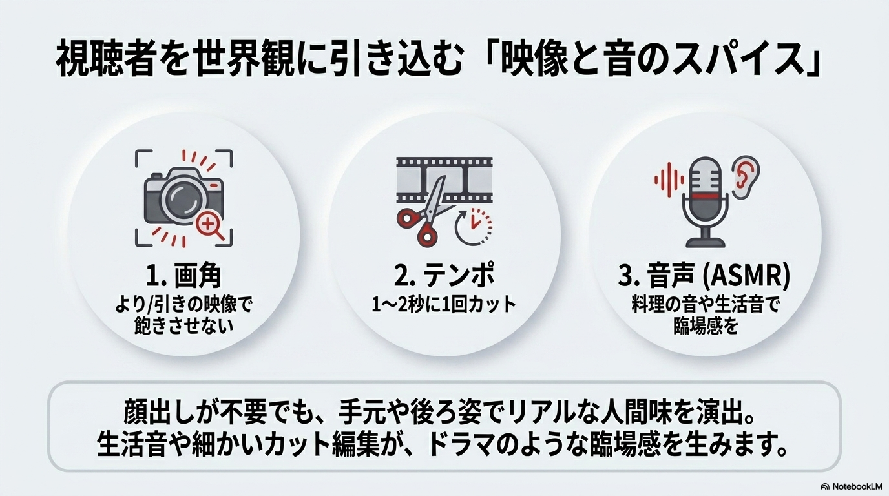
リールは、アカウントのフォロワー数が「ゼロ」であっても、コンテンツの質が高ければ、おすすめ枠を通じて新規ユーザーへ広範囲に拡散される特性があります。
アルゴリズム評価で極めて重要な4つの指標：
2% 以上）」が重視されます0.5% 以上）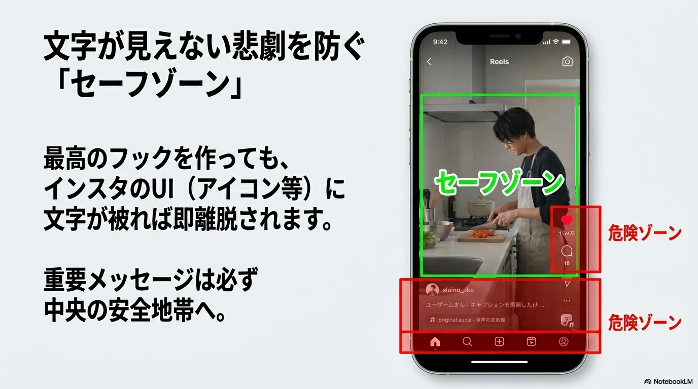
ループ再生を促すためには、動画の終わりと始まりが自然に繋がるような無限ループ台本も効果的です。
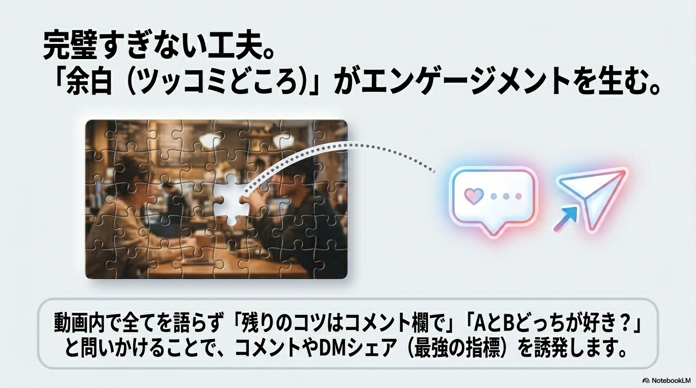
アルゴリズムに評価されるためにも、フォロワー外への露出を最大化させる指標（完読率、保存率、DMシェア）を念頭に設計しましょう。
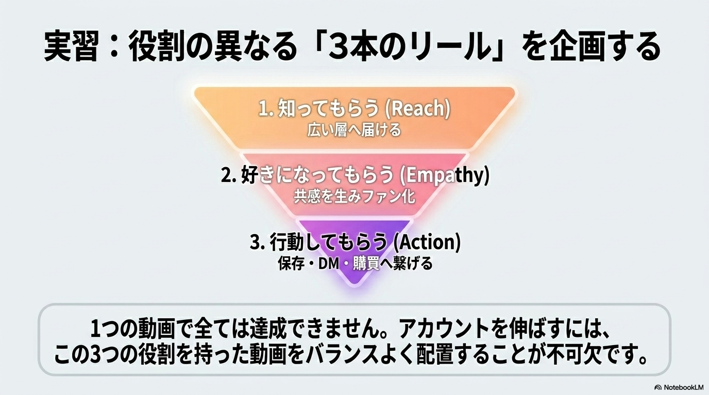
リール動画の成否の7割は最初の2秒で決まります。冒頭でターゲットを明確化し、興味のない人をスクロールさせつつ、見たい人を瞬時に惹きつける映像やテキストを配置します。
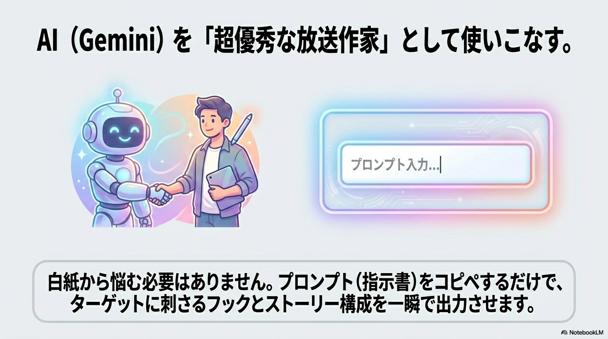
リール上にテロップ等を配置する際、画面の端に寄せすぎると、Instagram公式UI（アカウント名、キャプション、各種操作アイコンなど）と重なって文字が切れてしまいます。必ず上下左右に十分な余白（セーフゾーン）を確保して配置します。
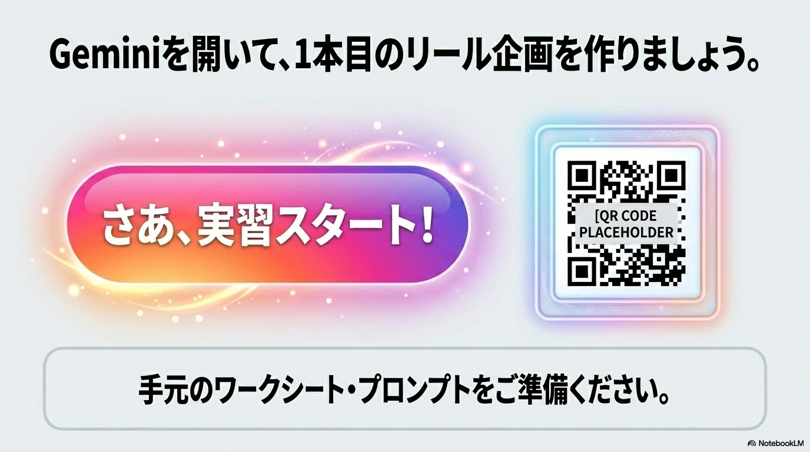
発信する目的やアカウントの属性に合わせて構成を変えることが重要です。
製品の視覚的な魅力やおしゃれな使用イメージ、世界観の演出を最優先します。
ノウハウ、チェックリスト、比較情報などの網羅性とテキストの読みやすさを重視します。
投稿者のパーソナリティ、実際の体験談、ライフスタイルへの共感などをフックにします。
⚠️ NG行為に注意：アルゴリズム対策で「コメントに『〇〇』と書いて」と露骨に要求する強要行為（エンゲージメント・ベイト）や、他アプリのロゴが入ったままの動画は、評価を下げられおすすめ表示を抑制されるため避けましょう。
目的： AIでリールの企画を練り、リール動画を制作する
役割（認知、共感、行動）のちがう3本を企画し、CanvaやEditsを使ったリール制作を行います。
▼ プロンプト例（コピーして使おう）
[推し]を発信するInstagramリールを3本企画してください。 1本目：まず知ってもらう（最初の3秒で目を引く） 2本目：もっと好きになってもらう（魅力を深く伝える） 3本目：行動してもらう（保存・フォローを促す） 各リールに以下を含めてください。 ・タイトル ・最初の3秒で見せるもの ・場面の流れ ・画面に出す文字の案 ・音楽の雰囲気 ・長さ（秒数）
講義動画の「ストーリー型（共感型）」のノウハウを反映させて、より魅力的な構成にブラッシュアップします。
▼ 追加のプロンプト例
この動画（ https://youtu.be/ywFaIPMChQw ）のストーリー型（共感型）の構成（冒頭のフック・挫折から解決までのストーリー・明確なCTA）を反映して、内容をさらに工夫してください。
リール動画を最後まで見てもらい、アクションに繋げるための基本の構成テンプレートです。
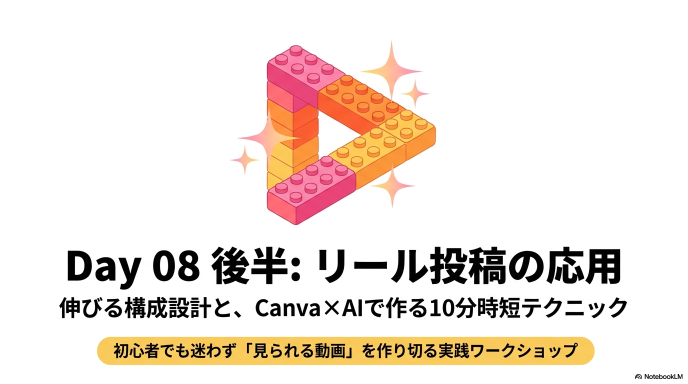
最初の2秒（冒頭2カット）でスクロールを止め、「自分向けだ」と惹きつけます。
2〜3秒に1回カットやズーム、テロップ出現などの動きを挟み、テンポよく見せて飽きさせません。
動画の最後で「続きはプロフィールへ」や「保存してね」と明確なアクション（CTA）を指示します。
視聴維持率（平均視聴時間）を高めるためには、それぞれの層に役割を持たせた構成作りが必要です。特に最初のフックが機能しなければ、動画はすぐスクロールされてしまいます。
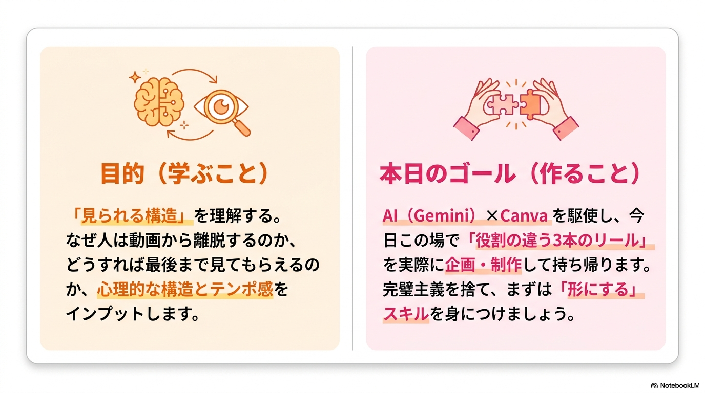
動画の最後と最初がスムーズに繋がるような無限ループ台本を作ることで、視聴維持率（平均視聴時間）が劇的に向上し、アルゴリズムに高く評価されます。
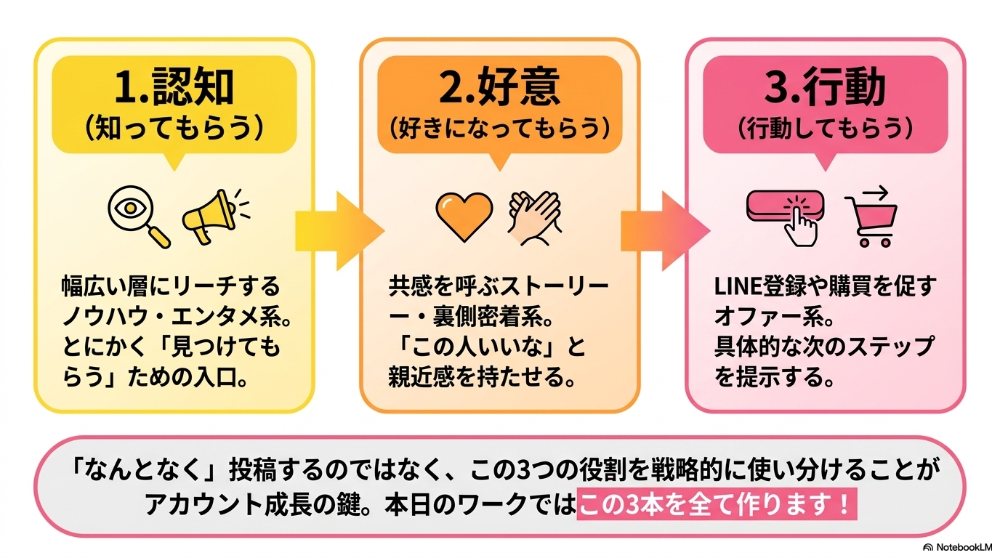
動画の最後で「次の動画は...」と繋げたり、最後の言葉と最初の言葉が自然に繋がる文章を作ることで、視聴者は気づかないうちに動画を2周、3周とループ再生します。
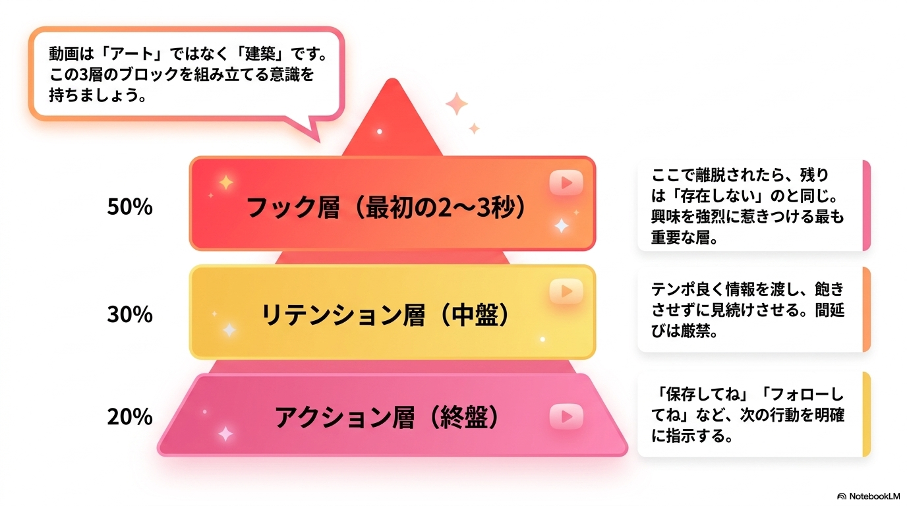
フォロワー外へのおすすめ露出（バズ）を爆発的に増やすためにクリアすべき指標です。
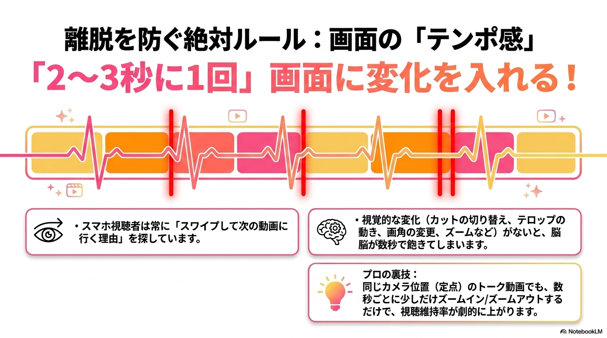
2% 以上「後で見返したい」と思われる良質なコンテンツである証拠になります。
0.5% 以上TwitterやLINE、InstagramのDMで共有（シェア）されると、アルゴリズムが強く評価し、拡散スピードが上がります。
目標保存率 2% 以上：「後で見返したい」と思われる良質なコンテンツである証拠になり、アカウント全体の信頼性を高めます。
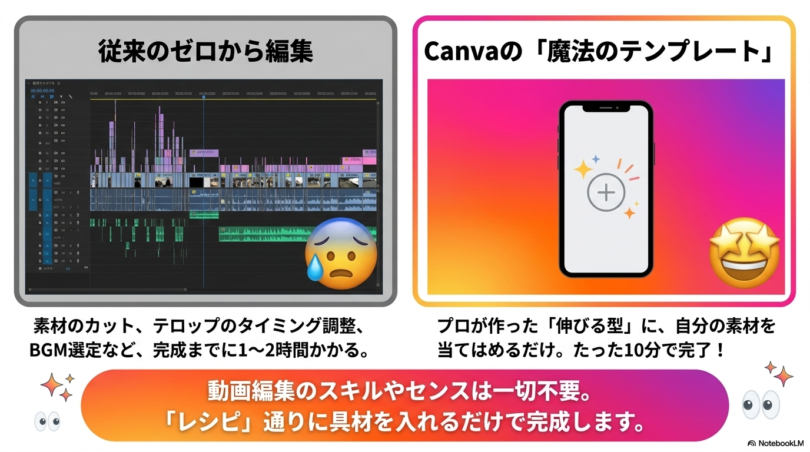
アルゴリズムで最も重視される指標を意識し、保存したくなるチェックリストや、誰かに送りたくなるおもしろ動画・共感動画を作ることがバズへの近道です。
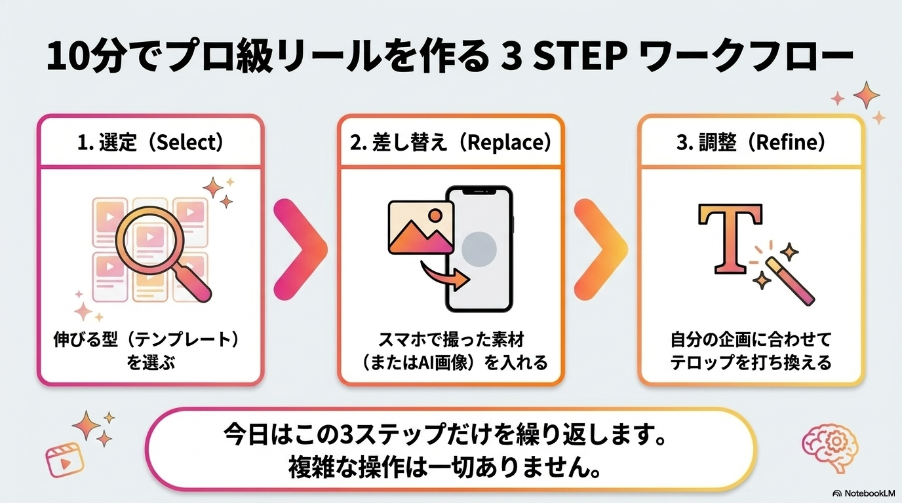
Canvaのトップページから「Instagramリール動画」を選び、発信テーマや世界観（フォント、配色）に近いテンプレートを検索・選定します。
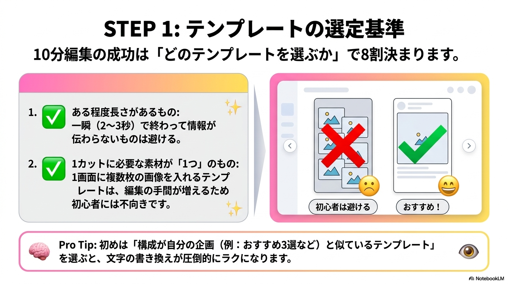
最初からデザインが組まれたテンプレートを使うことで、色のバランスやアニメーションの動きを自分で一から考える必要がなくなります。
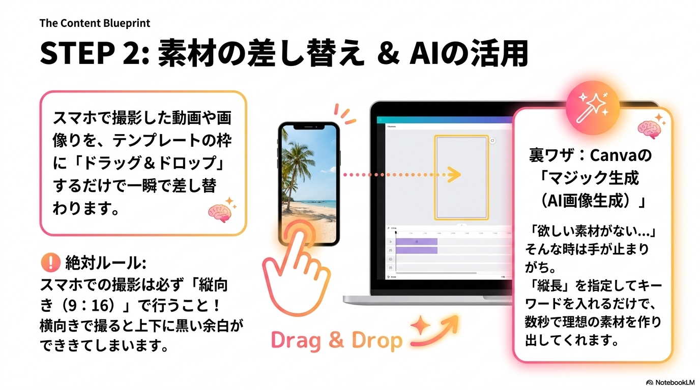
テンプレート内のダミー動画や画像を、自分の推し画像・動画（またはCanva内の「素材」から検索したおしゃれな日常動画）にドラッグ＆ドロップで簡単に差し替えます。
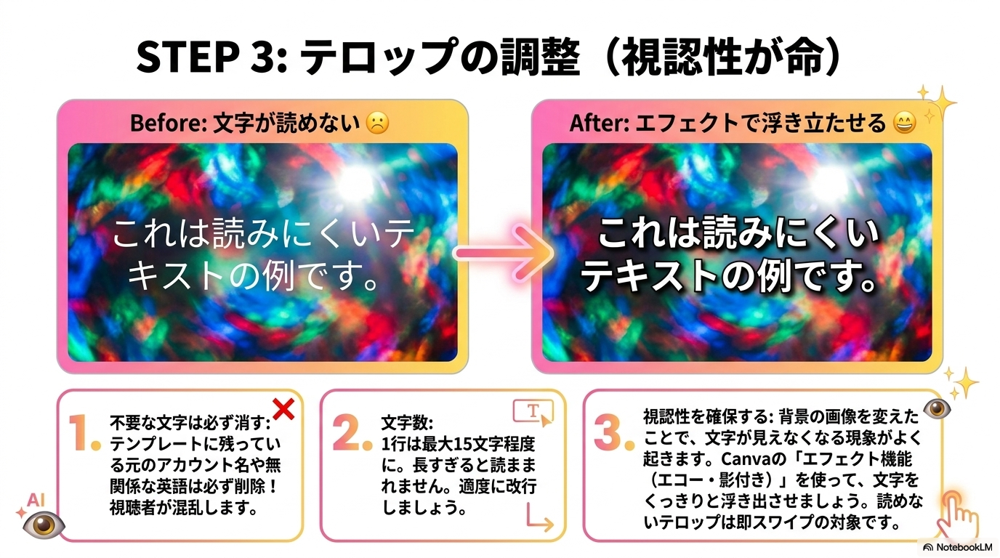
自分のテーマに合った写真や、無料素材のB-Roll動画を使用することで、視覚的な美しさとオリジナリティを両立できます。
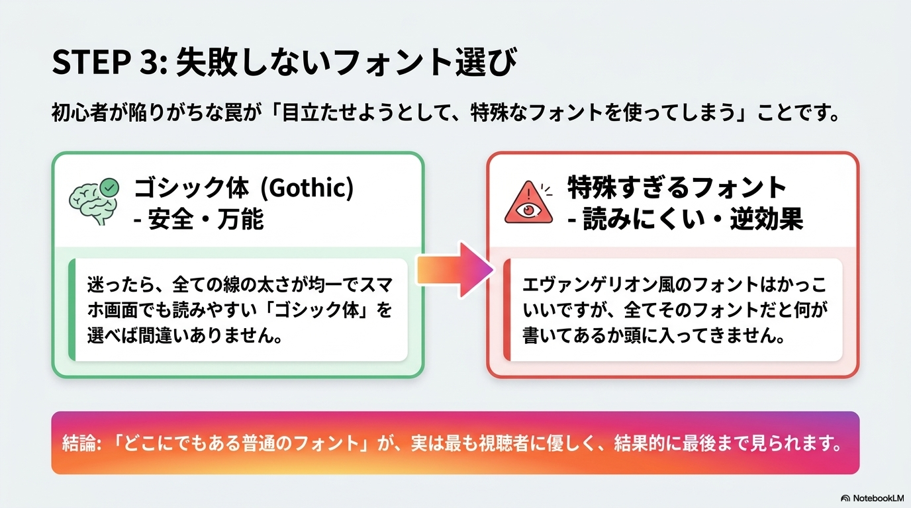
テロップをダブルクリックして内容を編集し、フォントやカラー、表示タイミング（タイムライン機能）を調整します。音声なしでも内容がしっかり伝わるようにします。
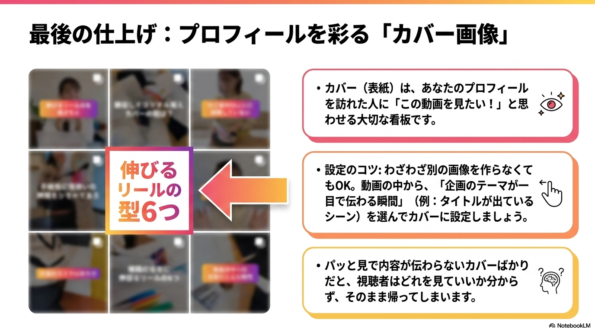
タイムライン（タイミング表示調整）機能を使って、音声やスライドの切り替えに合わせて文字が出現・消失するよう設定します。
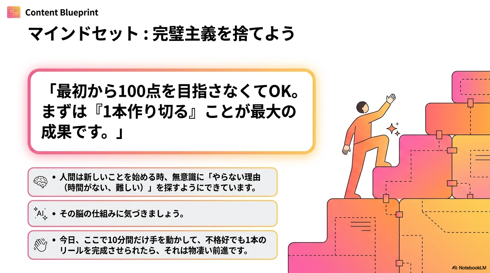
テロップのセーフゾーンを意識し、公式UI（アカウント名や右のアクションボタン）と重ならないように中央寄りに配置します。
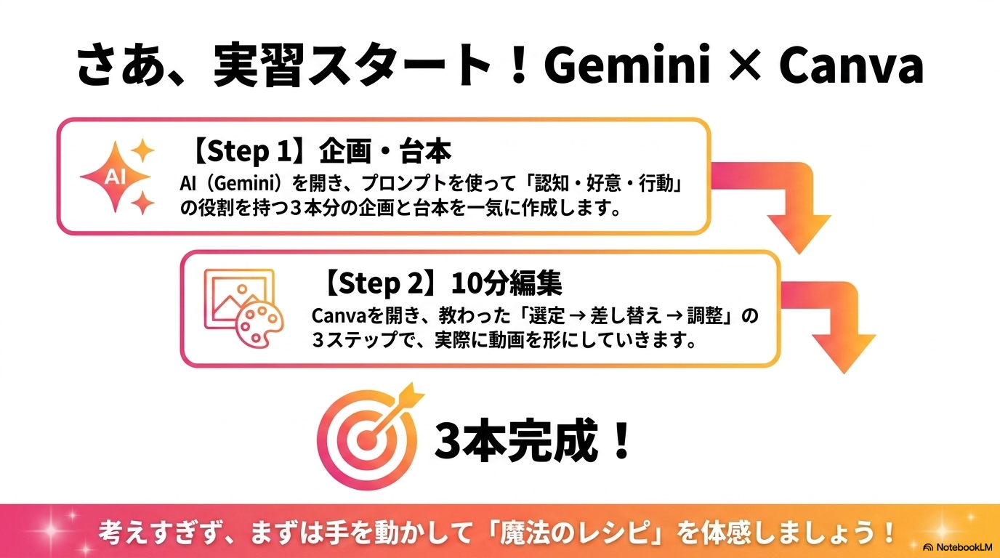
AI（Geminiなど）であらかじめ作成したリール台本をコピーし、Canvaのテンプレートをベースに編集することで、デザインセンス不要で1本あたり約10分でプロ級のリールを完成させられます。
目的： Canvaを活用して1本のリール動画を完成させる
「Instagramリール動画」から、自分の発信テーマに合った動きやレイアウトのテンプレートを選びます。
推しに関する画像や動画（またはおしゃれな日常の動画など）に差し替え、AIで考えた台本のテキストを入力します。